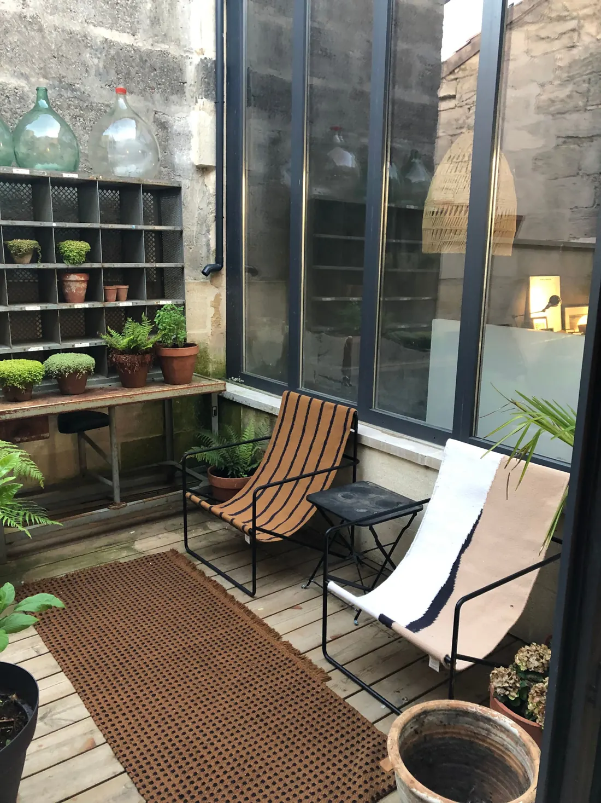
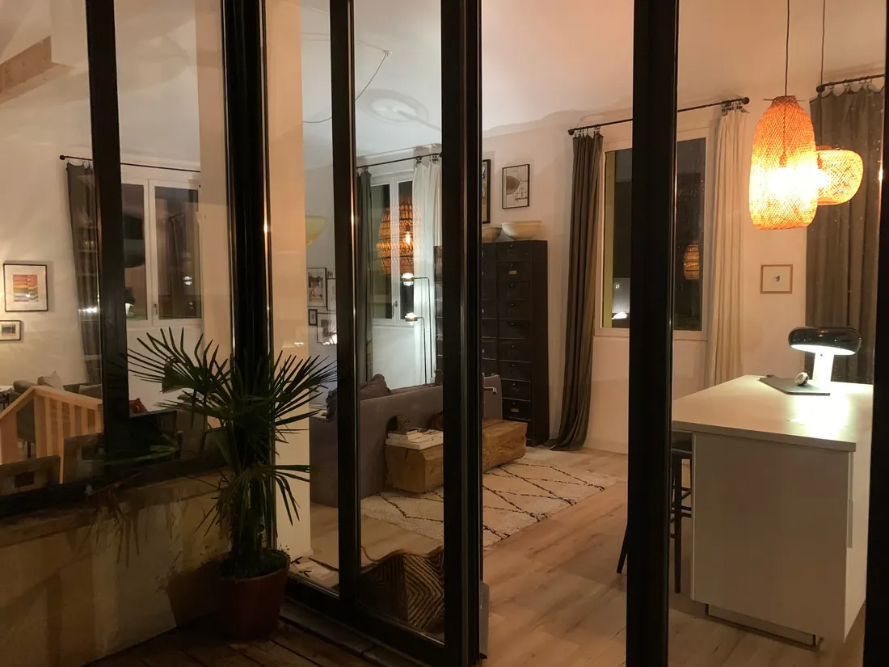

Burdeos en familia
Muelles sin coches para pasear en bici, un espejo de agua gigante donde los niños corren descalzos, museos para tocar y experimentar: Burdeos es una gran ciudad a la medida de las familias. Nuestros consejos, desde nuestra casa del centro.

¿Qué hacer en Burdeos con niños?
- El Espejo de Agua, plaza de la Bolsa: frente a la fachada más fotografiada de Burdeos, una inmensa losa cubierta por unos centímetros de agua, con brumas refrescantes. Cuando hace buen tiempo, a los niños les encanta jugar allí.
- Los muelles del Garona: varios kilómetros de paseo sin coches, perfectos para la bici, el patinete o los patines, con parques infantiles por el camino.
- Cap Sciences, en los muelles: un centro de ciencias con exposiciones interactivas, pensadas para tocar y experimentar.
- El Muséum de Bordeaux – sciences et nature, junto al Jardin Public: animales disecados, colecciones espectaculares y un espacio dedicado a los más pequeños.
- El Jardin Public: un gran parque en pleno centro, con sus céspedes, sus patos y sus parques infantiles.
- Los Bassins des Lumières: exposiciones inmersivas de arte digital, proyectadas en la antigua base de submarinos.
- La Cité du Vin, más bien para los padres, con un mirador que ofrece una bonita vista del Garona.
Desde la casa, el centro (calle Sainte-Catherine, plaza de la Comédie, barrio de Saint-Pierre) está a 10 minutos a pie, y el tranvía y el autobús a 4 minutos para llegar a los muelles, a Chartrons o a la estación de Saint-Jean.
Escapadas de un día
- Arcachon y la duna de Pilat, a aproximadamente una hora: la duna más alta de Europa, y la bahía de Arcachon con sus playas tranquilas, ideales con niños.
- Saint-Émilion, a unos 45 minutos: un pueblo medieval Patrimonio de la Humanidad entre viñedos, al que se llega en coche o en tren desde la estación de Saint-Jean.
- Lacanau, a aproximadamente una hora: el lago para los pequeños, el océano para los mayores. Y nuestra Maison du Lac para alargar la estancia (consulta nuestra guía de Lacanau en familia y nuestro itinerario una semana en familia en la Gironda).
¿Cuándo visitar Burdeos en familia?
Medias registradas entre 2015 y 2024 (fuente: Open-Meteo):
| Mes | Temperatura por la tarde | Temperatura por la mañana | Días de lluvia |
|---|---|---|---|
| Abril | 18 °C | 8 °C | 11 |
| Mayo | 21 °C | 12 °C | 12 |
| Junio | 25 °C | 15 °C | 12 |
| Julio | 27 °C | 17 °C | 7 |
| Agosto | 28 °C | 17 °C | 8 |
| Septiembre | 25 °C | 15 °C | 10 |
| Octubre | 20 °C | 12 °C | 11 |
La primavera y septiembre son ideales para pasear y visitar. En julio y agosto hace calor: aprovecha las mañanas para las visitas, el Espejo de Agua por la tarde, y piensa en un día en el océano.
¿Dónde alojarse en Burdeos en familia?
Para ocho personas, una habitación de hotel por familia sale cara enseguida y separa a todo el mundo. La Maison de Pierre, nuestra casa urbana de piedra de sillería recién reformada, está pensada para convivir en grupo:
- Hasta 8 personas en 5 dormitorios con cama doble, 1 baño y 1 baño con ducha.
- Una gran sala de estar bajo cristalera y una terraza en la planta superior, un patio y un jardín.
- Libros y juguetes para niños de 5 a 10 años, juegos de mesa, televisión de 83 pulgadas con Netflix.
- Cocina equipada, lavadora y secadora, wifi, llegada autónoma a la hora que te venga bien.
- Valoración de 4,88 sobre 5 en 41 reseñas.
Conviene saber: la casa no es adecuada para bebés menores de 2 años (tiene escaleras). Sin aparcamiento en la casa: aparcamiento de pago en la calle y parkings de pago cerca, pero el tranvía permite prescindir del coche. Sin aire acondicionado.


Ver la disponibilidad de la Maison de Pierre−10 % en toda la estancia reservando directamente en esta web.
Preguntas frecuentes
¿Qué hacer en Burdeos con niños?
Jugar en el Espejo de Agua frente a la plaza de la Bolsa cuando hace buen tiempo, pasear en bici o en patinete por los muelles, descubrir las exposiciones interactivas de Cap Sciences, el Muséum de Bordeaux – sciences et nature, los Bassins des Lumières y disfrutar de los céspedes y parques infantiles del Jardin Public.
¿Cuándo visitar Burdeos en familia?
La primavera (de abril a junio) y septiembre ofrecen días agradables, entre 18 y 25 °C por la tarde. Julio y agosto son los meses más calurosos, en torno a 27 o 28 °C.
¿Dónde alojarse en Burdeos con una familia numerosa?
La Maison de Pierre tiene capacidad para 8 personas en 5 dormitorios, con una gran sala de estar bajo cristalera y una terraza, a 10 minutos a pie del centro y a 4 minutos del tranvía.
¿La Maison de Pierre es adecuada para bebés?
No, no es adecuada para bebés menores de 2 años (la casa tiene escaleras). En cambio, está equipada con libros y juguetes para niños de 5 a 10 años.
¿Hace falta coche para visitar Burdeos?
No: el centro se visita a pie y en tranvía. La Maison de Pierre no tiene aparcamiento en la casa (aparcamiento de pago en la calle y parkings de pago cerca).